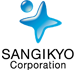

KBC Organization Team
Business Leverage
開会
13:00
基調講演・鼎談
創業者と語る
"XICA"の軌跡
×
13:15~
報告プレゼンテーション
14:30~
デモンストレーション
17:00~
表彰式
17:45~
閉会
18:10
懇親会
18:30~
協賛組織 |
|||||||||||
 |
 |
||||||||||
| 株式会社 エー・アイ・ピー |
アーキタイプ株式会社 | 株式会社ブロードバンドタワー | |||||||||
 |
|||||||||||
| 株式会社D2C | 株式会社 ディー・ティー・ピー |
一般財団法人 高度映像情報センター |
|||||||||
|  | |||||||||||
| ラーニングエッジ株式会社 | 三菱地所株式会社 | 株式会社三技協 | |||||||||
 |
|||||||||||
| 新日本有限責任監査法人 | 有限責任監査法人 トーマツ |
ウェブリオ株式会社 | 株式会社野心満々 | ||||||||
後援組織 |
メンター三田会 |
情報産業三田会 |
慶應藤沢イノベーションビレッジ |
MMインキュベーションパートナーズ株式会社 |
共催 |
慶應SFC イノベーション＆アントレプレナーシップ |
基調講演
XICA CEO 平尾喜昭氏
1987年生まれ。大学在籍時、竹中平蔵から学んだ"統計分析"に魅力を感じ、2012年の卒業と同時にサイカを創業。
統計分析のプロではなく、マーケッターなど、実務のプロのために作った統計分析Webアプリ「adelie (アデリー)」を展開する。
なお、元々はミュージシャンを目指し、日韓で音楽活動を行っていたという異色の経歴も持つ。
TechCrunch startup battle 2013 Microsoft賞
Young Entrepreneur Award 2013 最優秀賞
XICA創業メンバー×國領二郎
創業者と語る"XICA"の軌跡
創業メンバーとの出会い
"統計"を選択した理由
起業を志す学生へ伝えたいこと
KBC Organization Team
Business Leverage
報告プレゼン

事業の内容と展望についてプレゼンテーションを行います
7min
事業の経緯紹介
支援者による講評Leverage期間の変化をKBCと社会人による支援チームがお話しします
5min
観覧質疑応答
客席の皆様もぜひ質問で報告プレゼンテーションへご参加下さい
8min
| ブロードバンドタワー賞 10万円 |
ディー・ティー・ピー賞 10万円 |
||||
| D2C賞 10万円 |
野心満々賞 10万円 |
メンター三田会賞 10万円 |
|||
| 情報産業三田会賞 10万円 |
KBC賞 30万円 |
||||
|
Starticle |
Yen |
STREET |
|
燃え燃えきゅん |
Wiki-Art |
MRS |
Starticle
人生最後の電話帳アプリ「Reach」
Yen
山口県に、一流の体験授業を
STREET
人の出会いに特化したSNS「WITH」
KBC Organization Team
Business Leverage
燃え燃えきゅん
ビジョンを実現できる「有田」の実現
Wiki-Art
日本のアートを世界へ送り出すプラットフォーム
内定者の飲み会で知り合ったメンバーでプランスタート。ビジネスコンテストやシードアクセラレーターをまわって支援を募り、主に専門的な情報を掲載することで他サービスとの差別化を考えていた
第2回報告会直前の時期にプランの短期的な結果を優先するのではなく、ビジョンを大切にしたプラットフォームの構築を目指し始める
現在は当初登記を進めていた法人とチームを解体し、当初のビジネスモデルのより精錬した形を目指して試行錯誤している。
MRS
患者の"痛み"を医療者に"翻訳"するアプリ
KBC Organization Team